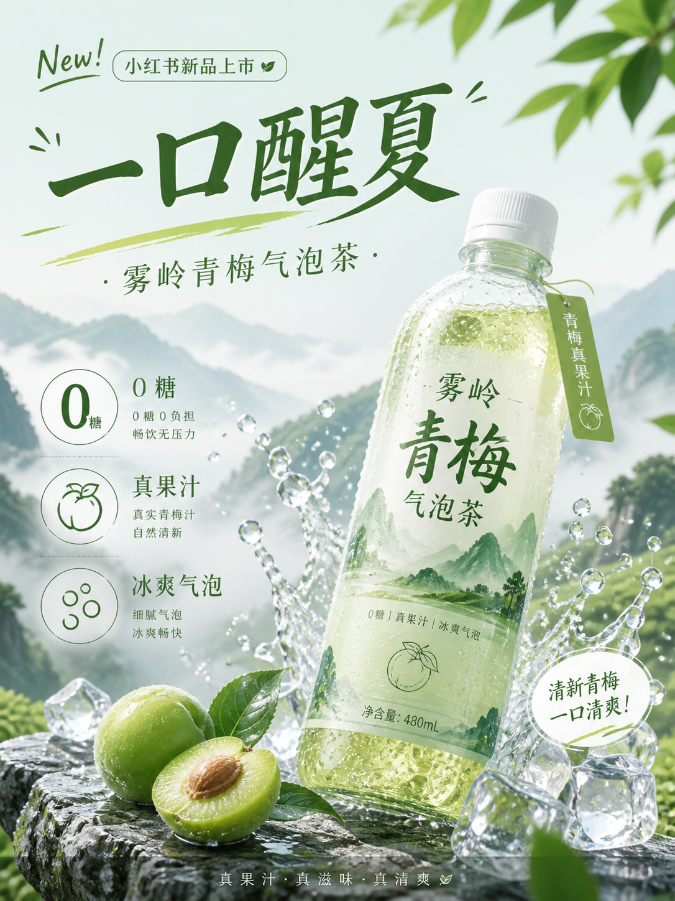
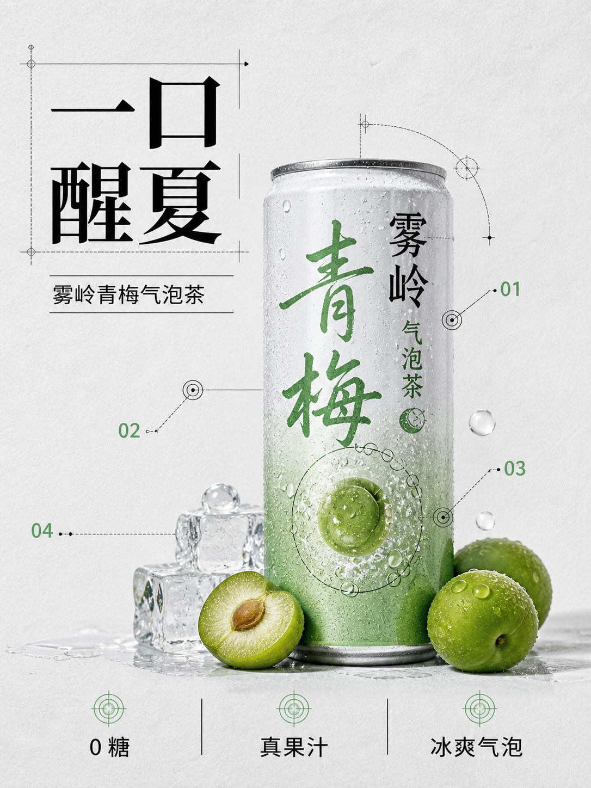
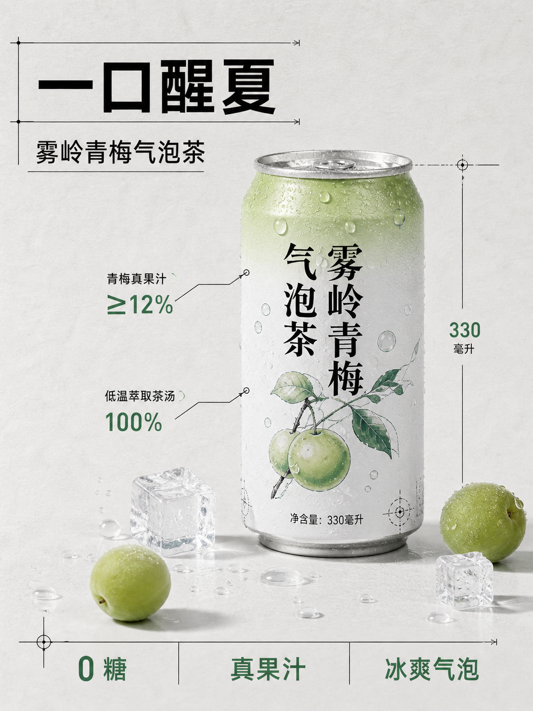

案例知识层
图片、原始 Prompt、来源、类别、风格与场景标签，构成可检索的事实样本。
517 casesResearch 02 Prompt as Code
这个库不训练新模型。你可以从真实案例和模板理解“别人怎么写”，再把需要的规则沉淀为自己的 Skill 配方，供后续任务重复使用。
把“描述灵感”升级为“约束明确、可审查、可批量替换变量”的生成协议。
01 / 能力展示
从案例事实到最终生图，中间不是一句“帮我优化 Prompt”，而是有来源、有路由、有模板、有交付出口的工作流。
图片、原始 Prompt、来源、类别、风格与场景标签，构成可检索的事实样本。
517 cases把任务拆成字段，附带使用条件、参考案例、建议与常见陷阱。
22 templates指导 Agent 依次匹配类别、视觉风格、场景和最近案例，再组装完整 Prompt。
semantic routing提供浏览、筛选、复制、收藏与试生成；登录、额度和支付属于产品化扩展。
gallery → generate13 CATEGORY ROUTER
13 类能力 · 数据固定于研究提交
THE SIX-BLOCK CONTRACT
这些块构成最小可审查单位。更换产品、渠道或风格时，只替换对应变量，而不必重写整段需求。
02 / 模板与案例全景
目录由上游固定提交 76fcd0e6 直接生成。你可以先看真实案例图和 Prompt，再用模板理解方法；图片从固定上游资源加载，仅作研究参考，商业使用仍需回到原始来源确认授权。
上游快照已接入页面
517 TRACEABLE CASES
517 条匹配
减少一个筛选条件，或只搜索一个主体词。
显示 1–12 / 517
03 / 多场景实验室
用同一套“业务输入 → 模板路由 → 六段 Prompt”方法，切换商品、信息图、UI 与海报四类任务，观察真正需要变化的控制字段。
TEACHING PREVIEW
这是用 HTML/CSS 表达的版式意图，不是模型生成图，也不代表最终画质。
LIBRARY ROUTING
命中依据：任务同时要求商品识别、卖点表达和社媒传播，因此先锁定商品模板，再用写实材质与食品场景控制视觉。
主要避坑：不要让随机水果和装饰遮挡包装；包装文字与广告宣称必须精确、克制。
PROMPT OUTPUT
帮我为“雾岭青梅气泡茶”做一张宣传图。
问题：没有渠道、构图、文字、材质、比例和失败约束。产品名、受众、任务目标。
主商品占比、信息层级和辅助物。
色彩、光线、材质与摄影感。
锁定标题和卖点，禁止占位文本。
投放渠道、画幅和输出方向。
避免遮挡、乱码、过度道具和混搭。
SKILL RECIPE BUILDER
当前场景、业务字段、模板路由和检查规则会被整理成一份可复制、可保存的配方。它不是模型调用器，而是后续接入任何图像工具前的工作协议。
04 / 真实生成对照
同一个“雾岭青梅气泡茶”任务，分别用短 Prompt、库的六段模板、带执行检查的 Skill Prompt 各生成一次。以下是一次样本的人工观察，不是模型能力的科学因果结论。

观察：标题醒目，但模型自行改成塑料瓶、增加英文和额外文案；“想要什么”清楚，“不要什么”缺失。
帮我为“雾岭青梅气泡茶”做一张小红书新品宣传图，3:4 竖版，标题是“一口醒夏”，卖点是“0 糖、真果汁、冰爽气泡”。

观察：画幅、单罐、技术图风格、主标题、产品名和三个卖点均命中；仍出现未定义编号标注，说明模板不能消除模型自由发挥。
主体与任务 → 构图与布局 → 视觉风格与材质 → 文字与标签 → 比例与输出 → 限制与负面项

观察：执行目标和版式稳定，但模型又发明了“≥12%”“100%”“330 毫升”等数据；Skill 的价值是路由和复核，不是保证第一次生成必然正确。
用途分类 + 资产位置 + 精确文字 + 布局坐标 + 不变量 + 禁止项 + 生成后检查顺序
库最能提高的是“需求完整性和可复查性”。模板让第一次结果更接近目标；Skill 进一步帮助自动选模板、追问缺失字段和检查失败项。文字与数据仍必须人工复核，失败时应只修改一个变量再生成。
05 / 理解与应用
选择你的目标、最大风险和使用规模，我们会给出一条起步路径。这里的建议来自库的模板结构与已发现的边界，不依赖真实 API。
YOUR STARTING ROUTE
先锁定包装识别和准确文案，再加入环境与道具。第一次只生成一个明确成品，不要同时要求主图、详情页和包装展开图。
使用 gpt-image-2-style-library，为我的商品主图选择模板。先向我确认产品、渠道、文案、画幅和必须避免的错误，再输出自然语言 Prompt 与 JSON 版本。
适合一次性任务。先复制结构，再替换业务变量；不要只抄风格词。
成本最低 · 一致性一般适合社媒与电商。固定版式和品牌约束，只变化主体、场景、色板。
可复用 · 需要评审规则适合多类需求。让 Agent 选模板和补字段，再由模型适配器负责调用。
可扩展 · 需要测试集READ BEFORE APPLYING